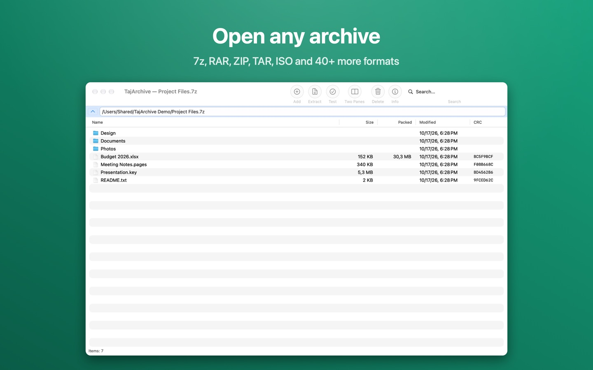
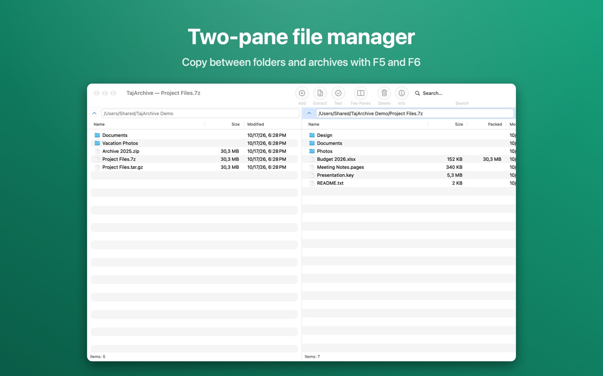
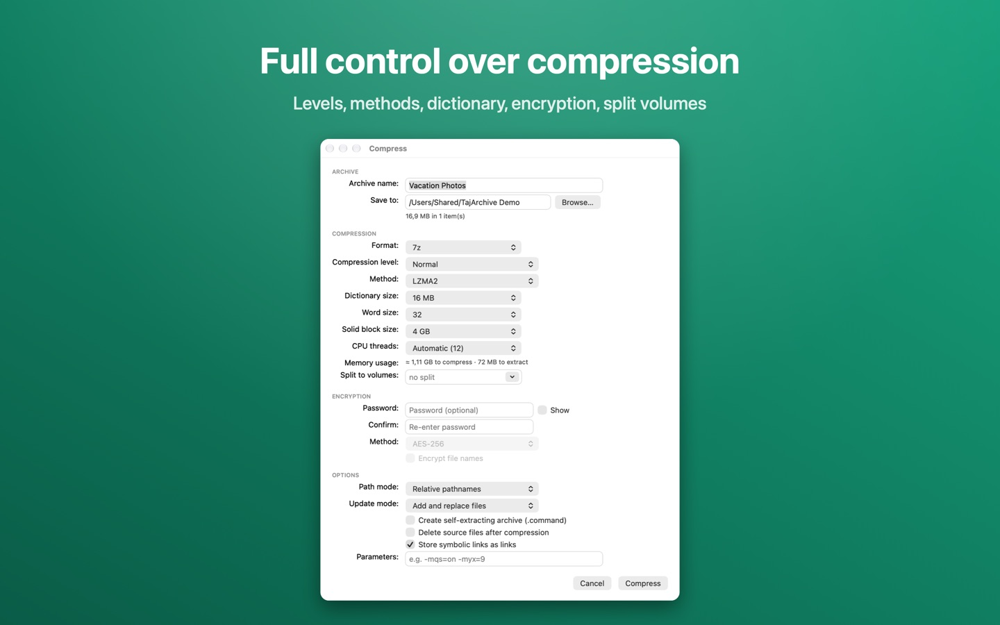
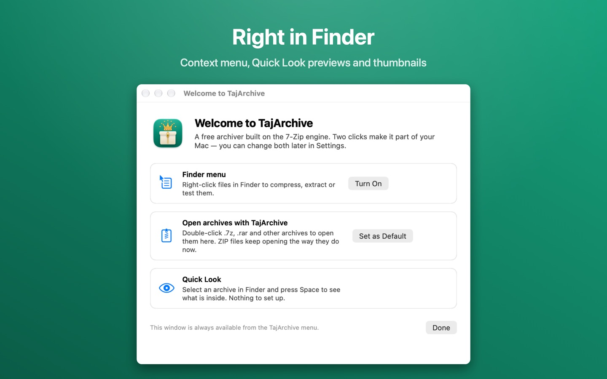

TajArchive
A free, open-source archiver for macOS, built on the 7-Zip engine. Open 7z, RAR, ZIP and 40+ more formats right from Finder.
Free. No ads, no tracking, no account. macOS 12 Monterey or later, Apple silicon and Intel.

Everything an archiver should do
Opens 40+ formats
7z, RAR, ZIP, TAR, GZip, BZip2, XZ, Zstandard, LZ4, CAB, ARJ, LHA, WIM, ISO, DMG, DEB, RPM and more — and any container with Open as Archive.
Creates the common ones
7z, ZIP, TAR, GZip, BZip2, XZ and Apple Archive, with split volumes, AES-256 encryption and self-extracting archives.
Lives in Finder
A context menu to compress, extract, test and checksum; Quick Look previews of archive contents; thumbnails with the file count.
Two-pane file manager
Browse folders and archives side by side; copy and move between them with F5 and F6, like the Windows 7-Zip you know.
Full compression control
Level, method, dictionary, word size, solid blocks, threads, update modes — with a live memory estimate.
Speaks your language
English, Russian and Tajik in full, plus menus and dialogs in 87 more languages from the 7-Zip translations.
Screenshots



Open source
GNU LGPL
TajArchive and its source code are free under the GNU LGPL. Contributions, translations and bug reports are welcome on GitHub.
Built on 7-Zip
Compression is done by the 7-Zip engine by Igor Pavlov (7-zip.org). TajArchive is an independent project, not affiliated with 7-Zip. 7-Zip source used.